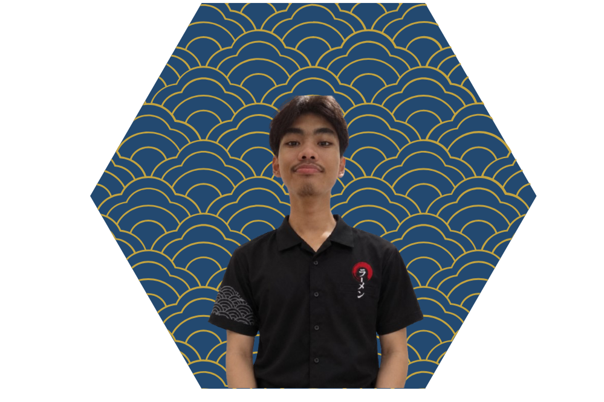
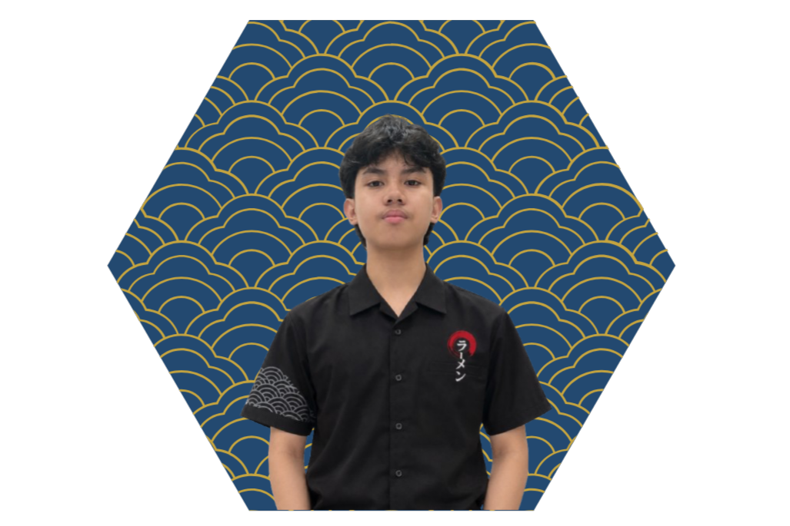
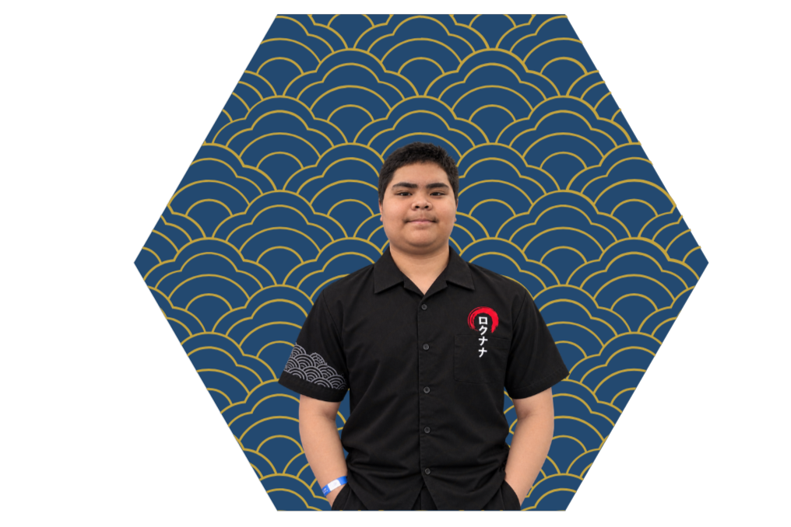

THE KITCHEN SOUNDTRACK
Enjoy a little ramen-shop atmosphere while you browse:
MEET OUR FOUNDERS
Three founders, one shared love of ramen.
OUR MISSION
Our mission is to serve comforting ramen made with care, fresh ingredients, and bold flavor, so every guest can enjoy a satisfying bowl and a warm welcome.
OUR VISION
Our vision is to grow into a ramen shop known for generous flavors, thoughtful service, and a welcoming place where friends and families can share a good meal.
OUR STORY
Saitama’s One-Punch Ramen began with a shared love of ramen and homemade noodles. We brought our ideas together to create hearty bowls inspired by Japanese flavors and made with care.

Jeon
Founder
Hi! I'm Jeon, and I am one of the founders of Saitama's One Punch Ramen. I am a STEM student, and I really love ramen and noodles. I taught my friends how to make good noodles, and that is how we turned it into a business. I really didn't expect that we would reach this stage, where we are now sharing our homemade noodles with other people.

Gabryel
Founder
Hello! I am Gabkebab (that's how I like my name to be shared) and I am a co-founder of Saitama's One Punch Ramen! I am a STEM student who likes homemade foods more than restaurant foods. I like eating and I love cooking.

Ady
Founder
I am Ady, one of the founders of Saitama's One Punch Ramen. I am also a STEM student and a guiding leader to Jeon and Gabryel as we share our love of ramen and noodles with others.